CODING AGENTS AS PIXEL WORLD MODELS
traex/DeepSeek-V4.1-Flash · mechanics_0005
点击播放 · 原生 RGB 像素
逐轮保存的候选
回放视频、检查图与代码变化。
每份候选均可单独播放。实际图片检查记录在下方工具轨迹中。
候选 01播放与检查图
点击播放 · 原生 RGB 像素

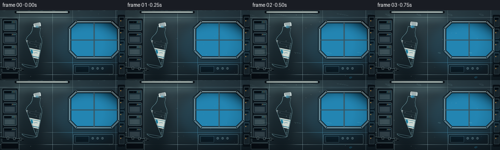
展开代码变化
--- 上一保存版本
+++ 本次保存版本
@@ -0,0 +1,550 @@
+from pathlib import Path
+import math
+
+import numpy as np
+from PIL import Image, ImageDraw, ImageFilter, ImageFont
+
+import artifact_io
+
+
+WIDTH = 256
+HEIGHT = 144
+SS = 4
+CW = WIDTH * SS
+CH = HEIGHT * SS
+FRAMES = 20
+FPS = 4
+
+ROOT = Path(__file__).resolve().parent
+RNG = np.random.default_rng(17)
+
+
+def clamp(value, low, high):
+ return max(low, min(high, value))
+
+
+def mix(a, b, t):
+ return tuple(round(a[i] * (1.0 - t) + b[i] * t) for i in range(3))
+
+
+def smoothstep(edge0, edge1, values):
+ t = np.clip((values - edge0) / (edge1 - edge0), 0.0, 1.0)
+ return t * t * (3.0 - 2.0 * t)
+
+
+def make_base():
+ y, x = np.mgrid[0:CH, 0:CW].astype(np.float32)
+ xn = x / CW
+ yn = y / CH
+ light = np.clip(1.0 - 0.65 * np.sqrt((xn - 0.16) ** 2 + (yn - 0.05) ** 2), 0.0, 1.0)
+
+ top = np.array([34, 48, 58], np.float32)
+ bottom = np.array([16, 23, 29], np.float32)
+ arr = top[None, None, :] * (1.0 - yn[..., None]) + bottom[None, None, :] * yn[..., None]
+ arr += light[..., None] * np.array([18, 17, 11], np.float32)
+ arr += np.array([2, 7, 8], np.float32)
+ img = Image.fromarray(np.clip(arr, 0, 255).astype(np.uint8), "RGB").convert("RGBA")
+ draw = ImageDraw.Draw(img, "RGBA")
+
+ # Rear wall panels and shallow depth lines.
+ for x0 in (158, 430, 594, 948):
+ draw.line((x0, 0, x0, CH), fill=(135, 165, 173, 24), width=2)
+ for y0 in (58, 430, 530):
+ draw.line((0, y0, CW, y0), fill=(150, 180, 187, 18), width=2)
+
+ # Overhead light trough and cool reflected light.
+ draw.rounded_rectangle((120, 5, 570, 26), radius=8, fill=(11, 16, 20, 220))
+ draw.rounded_rectangle((134, 10, 556, 20), radius=5, fill=(197, 220, 218, 215))
+ draw.rounded_rectangle((150, 12, 540, 16), radius=2, fill=(242, 250, 239, 235))
+ glow = Image.new("RGBA", (CW, CH), (0, 0, 0, 0))
+ gd = ImageDraw.Draw(glow, "RGBA")
+ gd.rectangle((100, 18, 600, 115), fill=(151, 190, 189, 40))
+ glow = glow.filter(ImageFilter.GaussianBlur(28))
+ img = Image.alpha_composite(img, glow)
+ draw = ImageDraw.Draw(img, "RGBA")
+
+ # Left equipment rack.
+ draw.rounded_rectangle((14, 65, 150, 514), radius=12, fill=(15, 24, 29, 238), outline=(92, 116, 122, 110), width=3)
+ panel_colors = [(33, 54, 62), (28, 43, 51), (39, 58, 64), (26, 39, 46)]
+ for row in range(4):
+ top = 82 + row * 103
+ draw.rounded_rectangle((27, top, 137, top + 86), radius=8, fill=(*panel_colors[row], 235), outline=(140, 164, 168, 50), width=2)
+ draw.rectangle((34, top + 9, 92, top + 24), fill=(7, 12, 16, 210))
+ for dot in range(3):
+ color = [(103, 211, 181), (238, 166, 73), (111, 184, 218)][(row + dot) % 3]
+ draw.ellipse((101 + dot * 10, top + 12, 106 + dot * 10, top + 17), fill=(*color, 210))
+ for vent in range(5):
+ draw.line((38, top + 39 + vent * 8, 120, top + 39 + vent * 8), fill=(146, 167, 171, 34), width=2)
+ draw.rounded_rectangle((8, 520, 153, 568), radius=8, fill=(10, 15, 19, 230), outline=(100, 120, 124, 70), width=2)
+
+ # Right-side storage and a few warm indicator lights.
+ draw.rounded_rectangle((964, 38, 1024, 548), radius=8, fill=(13, 20, 25, 232))
+ for row in range(5):
+ top = 55 + row * 98
+ draw.rounded_rectangle((974, top, 1018, top + 80), radius=5, fill=(31, 44, 50, 235), outline=(104, 127, 132, 55), width=2)
+ draw.rectangle((981, top + 10, 1011, top + 22), fill=(5, 10, 14, 220))
+ draw.ellipse((985, top + 28, 993, top + 36), fill=(232, 162, 72, 180))
+
+ # Hoses and mounting rail behind the bottle.
+ draw.line((0, 473, 193, 492), fill=(6, 12, 16, 150), width=13)
+ draw.line((0, 468, 193, 487), fill=(68, 91, 96, 180), width=5)
+ draw.line((0, 465, 193, 484), fill=(125, 145, 146, 80), width=2)
+ for x0 in (55, 108, 160):
+ draw.rounded_rectangle((x0, 465 + x0 // 16, x0 + 18, 486 + x0 // 16), radius=4, fill=(27, 39, 44, 230), outline=(150, 169, 169, 75), width=2)
+
+ # Small service hatch and panel below the window.
+ draw.rounded_rectangle((600, 446, 928, 528), radius=10, fill=(20, 31, 37, 235), outline=(107, 131, 135, 75), width=3)
+ draw.rectangle((618, 462, 728, 512), fill=(10, 17, 21, 210), outline=(86, 111, 117, 70), width=2)
+ for x0 in (750, 790, 830):
+ draw.ellipse((x0, 470, x0 + 18, 488), outline=(150, 170, 169, 70), width=3)
+ draw.line((x0 + 9, 474, x0 + 9, 484), fill=(205, 220, 217, 100), width=2)
+
+ return img
+
+
+def make_window(img):
+ # A faceted cupola gives the scene an unmistakable orbital setting.
+ polygon = [(626, 94), (914, 94), (971, 147), (971, 335), (914, 392), (626, 392), (570, 335), (570, 147)]
+ mask = Image.new("L", (CW, CH), 0)
+ ImageDraw.Draw(mask).polygon(polygon, fill=255)
+
+ space = Image.new("RGBA", (CW, CH), (4, 8, 16, 255))
+ sd = ImageDraw.Draw(space, "RGBA")
+ for _ in range(110):
+ x = RNG.uniform(570, 971)
+ y = RNG.uniform(94, 392)
+ radius = RNG.choice([1, 1, 1, 2, 2, 3])
+ alpha = int(RNG.integers(80, 235))
+ sd.ellipse((x - radius, y - radius, x + radius, y + radius), fill=(211, 229, 238, alpha))
+ sd.ellipse((798, 118, 826, 146), fill=(110, 144, 185, 18))
+
+ # Earth's limb and a thin, luminous atmosphere.
+ earth = Image.new("RGBA", (CW, CH), (0, 0, 0, 0))
+ ed = ImageDraw.Draw(earth, "RGBA")
+ ed.ellipse((450, 476, 1260, 1240), fill=(20, 72, 116, 255))
+ ed.ellipse((466, 491, 1242, 1225), fill=(30, 103, 147, 255))
+ ed.ellipse((495, 535, 1205, 1198), fill=(39, 121, 158, 255))
+ # Soft cloud belts, drawn separately and blurred before clipping to the globe.
+ clouds = Image.new("RGBA", (CW, CH), (0, 0, 0, 0))
+ cd = ImageDraw.Draw(clouds, "RGBA")
+ cloud_specs = [
+ (480, 545, 110, 22, 145, -8),
+ (600, 520, 155, 30, 170, 5),
+ (742, 505, 125, 24, 190, -4),
+ (845, 535, 165, 32, 150, 7),
+ (975, 505, 140, 26, 180, -7),
+ (1080, 550, 120, 22, 140, 3),
+ (530, 600, 170, 36, 115, 4),
+ (710, 615, 205, 42, 125, -5),
+ (910, 610, 155, 31, 130, 5),
+ ]
+ for x, y, rx, ry, alpha, angle in cloud_specs:
+ layer = Image.new("RGBA", (CW, CH), (0, 0, 0, 0))
+ ld = ImageDraw.Draw(layer, "RGBA")
+ ld.ellipse((x - rx, y - ry, x + rx, y + ry), fill=(238, 244, 238, alpha))
+ layer = layer.rotate(angle, center=(x, y), resample=Image.Resampling.BICUBIC)
+ clouds = Image.alpha_composite(clouds, layer)
+ clouds = clouds.filter(ImageFilter.GaussianBlur(8))
+ earth = Image.alpha_composite(earth, clouds)
+
+ atmosphere = Image.new("RGBA", (CW, CH), (0, 0, 0, 0))
+ ad = ImageDraw.Draw(atmosphere, "RGBA")
+ ad.ellipse((442, 468, 1268, 1248), outline=(85, 194, 238, 145), width=17)
+ atmosphere = atmosphere.filter(ImageFilter.GaussianBlur(11))
+ earth = Image.alpha_composite(atmosphere, earth)
+
+ img.paste(space, (0, 0), mask)
+ img.paste(earth, (0, 0), mask)
+
+ draw = ImageDraw.Draw(img, "RGBA")
+ # Window frame with bevels and corner bolts.
+ draw.line(polygon + [polygon[0]], fill=(4, 8, 11, 245), width=27, joint="curve")
+ draw.line(polygon + [polygon[0]], fill=(78, 96, 102, 255), width=16, joint="curve")
+ draw.line(polygon + [polygon[0]], fill=(139, 160, 163, 190), width=5, joint="curve")
+ draw.line([(770, 98), (770, 388)], fill=(39, 51, 56, 230), width=10)
+ draw.line([(770, 98), (770, 388)], fill=(126, 145, 148, 105), width=3)
+ draw.line([(574, 245), (967, 245)], fill=(39, 51, 56, 225), width=8)
+ draw.line([(574, 245), (967, 245)], fill=(132, 151, 152, 90), width=2)
+ for x, y in polygon:
+ draw.ellipse((x - 7, y - 7, x + 7, y + 7), fill=(21, 29, 33, 255), outline=(173, 188, 187, 125), width=2)
+
+ # A cold Earthlight wash on the nearby wall.
+ wash = Image.new("RGBA", (CW, CH), (0, 0, 0, 0))
+ wd = ImageDraw.Draw(wash, "RGBA")
+ wd.ellipse((405, 70, 1040, 525), fill=(36, 133, 177, 36))
+ wash = wash.filter(ImageFilter.GaussianBlur(46))
+ return Image.alpha_composite(img, wash)
+
+
+def bottle_geometry(frame):
+ theta = math.radians(11.2 + 0.18 * math.sin(frame * 0.42))
+ base = np.array([235.0 + 1.4 * math.sin(frame * 0.31), 472.0 + 1.2 * math.cos(frame * 0.37)])
+
+ def point(lx, ly):
+ return (
+ base[0] + math.cos(theta) * lx + math.sin(theta) * ly,
+ base[1] + math.sin(theta) * lx - math.cos(theta) * ly,
+ )
+
+ outer_local = [(-68, 220), (-62, 245), (-42, 276), (-33, 302), (-33, 341),
+ (33, 341), (33, 302), (42, 276), (62, 245), (68, 220),
+ (68, 20)]
+ # Rounded base.
+ for i in range(13):
+ a = math.pi * (1.0 + i / 12.0)
+ outer_local.append((62 * math.cos(a), 20 + 20 * math.sin(a)))
+
+ inner_local = [(-61, 217), (-55, 242), (-36, 272), (-27, 300), (-27, 333),
+ (27, 333), (27, 300), (36, 272), (55, 242), (61, 217),
+ (61, 24)]
+ for i in range(13):
+ a = math.pi * (1.0 + i / 12.0)
+ inner_local.append((55 * math.cos(a), 24 + 17 * math.sin(a)))
+
+ outer = [point(x, y) for x, y in outer_local]
+ inner = [point(x, y) for x, y in inner_local]
+ mouth = np.array(point(0, 341))
+ up = np.array([math.sin(theta), -math.cos(theta)])
+ right = np.array([math.cos(theta), math.sin(theta)])
+ return point, outer, inner, mouth, up, right, theta
+
+
+def draw_cap(img, center, angle, scale=1.0):
+ layer = Image.new("RGBA", (CW, CH), (0, 0, 0, 0))
+ draw = ImageDraw.Draw(layer, "RGBA")
+ ca, sa = math.cos(angle), math.sin(angle)
+
+ def p(lx, ly):
+ return (center[0] + ca * lx * scale - sa * ly * scale,
+ center[1] + sa * lx * scale + ca * ly * scale)
+
+ poly = [p(-25, -15), p(25, -15), p(29, -9), p(29, 13), p(22, 18), p(-22, 18), p(-29, 13), p(-29, -9)]
+ draw.polygon(poly, fill=(213, 226, 225, 245), outline=(247, 252, 248, 220))
+ draw.line([p(-22, 17), p(22, 17)], fill=(102, 129, 134, 210), width=4)
+ for i in range(-18, 19, 6):
+ draw.line([p(i, -13), p(i, 15)], fill=(94, 119, 124, 80), width=2)
+ draw.line([p(-21, -11), p(-17, 13)], fill=(250, 253, 248, 135), width=3)
+ draw.line([p(-24, -9), p(24, -9)], fill=(255, 255, 251, 130), width=3)
+ img.alpha_composite(layer)
+
+
+def bottle_mask_and_points(frame):
+ point, outer, inner, mouth, up, right, theta = bottle_geometry(frame)
+ outer_mask = Image.new("L", (CW, CH), 0)
+ inner_mask = Image.new("L", (CW, CH), 0)
+ ImageDraw.Draw(outer_mask).polygon(outer, fill=255)
+ ImageDraw.Draw(inner_mask).polygon(inner, fill=255)
+ return point, outer, inner, mouth, up, right, theta, outer_mask, inner_mask
+
+
+def draw_bottle(img, frame):
+ point, outer, inner, mouth, up, right, theta, outer_mask, inner_mask = bottle_mask_and_points(frame)
+ arr = np.asarray(img.convert("RGB")).astype(np.float32)
+ mask_arr = np.asarray(outer_mask) > 0
+
+ # Soft contact shadow, deliberately faint because the bottle is free floating.
+ shadow = Image.new("RGBA", (CW, CH), (0, 0, 0, 0))
+ sd = ImageDraw.Draw(shadow, "RGBA")
+ sx, sy = point(0, 145)
+ sd.ellipse((sx - 104, sy - 245, sx + 104, sy + 245), fill=(0, 5, 8, 70))
+ shadow = shadow.filter(ImageFilter.GaussianBlur(30))
+ img.alpha_composite(shadow)
+
+ # Glass body: a restrained blue tint and refracted background.
+ blurred = np.asarray(img.convert("RGB").filter(ImageFilter.GaussianBlur(5))).astype(np.float32)
+ glass_tint = np.array([78, 165, 194], np.float32)
+ arr[mask_arr] = arr[mask_arr] * 0.73 + blurred[mask_arr] * 0.12 + glass_tint * 0.15
+
+ # Liquid fill, clipped inside the bottle.
+ liquid_mask = Image.new("L", (CW, CH), 0)
+ liquid_poly = []
+ for lx, ly in [(-61, 217), (-55, 242), (-36, 272), (-27, 300), (-27, 333),
+ (27, 333), (27, 300), (36, 272), (55, 242), (61, 217), (61, 25)]:
+ liquid_poly.append(point(lx, ly))
+ for i in range(13):
+ a = math.pi * (1.0 + i / 12.0)
+ liquid_poly.append(point(55 * math.cos(a), 25 + 17 * math.sin(a)))
+ ImageDraw.Draw(liquid_mask).polygon(liquid_poly, fill=255)
+ lmask = np.asarray(liquid_mask) > 0
+ y_world = np.mgrid[0:CH, 0:CW][0].astype(np.float32)
+ yn = np.clip((y_world - 210) / 320, 0, 1)
+ top_color = np.array([67, 177, 211], np.float32)
+ bottom_color = np.array([17, 95, 151], np.float32)
+ liquid_color = top_color[None, None, :] * (1 - yn[..., None]) + bottom_color[None, None, :] * yn[..., None]
+ liquid_color += (np.sin(y_world / 13.0)[..., None] * 0.5 + 0.5) * np.array([3, 7, 8], np.float32)
+ arr[lmask] = arr[lmask] * 0.30 + liquid_color[lmask] * 0.70
+
+ # Label, glass ribs, and internal bubbles on clipped overlays.
+ details = Image.new("RGBA", (CW, CH), (0, 0, 0, 0))
+ dd = ImageDraw.Draw(details, "RGBA")
+ label_poly = [point(-66, 86), point(66, 86), point(66, 161), point(-66, 161)]
+ dd.polygon(label_poly, fill=(226, 234, 226, 230))
+ dd.line([point(-66, 98), point(66, 98)], fill=(26, 116, 146, 235), width=6)
+ dd.line([point(-66, 150), point(66, 150)], fill=(31, 131, 155, 210), width=4)
+ # A simple droplet mark and wave mark.
+ cx, cy = point(0, 125)
+ dd.ellipse((cx - 11, cy - 14, cx + 11, cy + 8), fill=(28, 137, 172, 235))
+ dd.polygon([(cx - 10, cy - 11), (cx, cy - 29), (cx + 10, cy - 11)], fill=(28, 137, 172, 235))
+ for offset in (-34, 34):
+ wx, wy = point(offset, 126)
+ dd.arc((wx - 17, wy - 7, wx + 17, wy + 7), 195, 345, fill=(70, 162, 183, 190), width=3)
+
+ # Ribs follow the bottle's local coordinate system.
+ for ly in (35, 54, 73, 178, 197, 216):
+ left = point(-62, ly)
+ right = point(62, ly)
+ dd.line([left, right], fill=(223, 247, 247, 36), width=3)
+
+ # A few tiny suspended bubbles in the bottle.
+ bubble_positions = [(-24, 42, 3), (11, 58, 2), (27, 184, 3), (-31, 205, 2), (16, 226, 2)]
+ for lx, ly, r in bubble_positions:
+ bx, by = point(lx, ly)
+ dd.ellipse((bx - r, by - r, bx + r, by + r), outline=(225, 249, 250, 150), width=1)
+ dd.ellipse((bx - r * 0.35, by - r * 0.45, bx + r * 0.2, by + r * 0.1), fill=(245, 255, 251, 120))
+ details.putalpha(Image.composite(details.getchannel("A"), Image.new("L", (CW, CH), 0), outer_mask))
+ img.alpha_composite(details)
+
+ # Glass edges, bevels, and long specular ribbons.
+ glass = Image.new("RGBA", (CW, CH), (0, 0, 0, 0))
+ gd = ImageDraw.Draw(glass, "RGBA")
+ gd.line(outer + [outer[0]], fill=(3, 21, 29, 125), width=12, joint="curve")
+ gd.line(outer + [outer[0]], fill=(166, 223, 231, 150), width=6, joint="curve")
+ gd.line([point(-56, 35), point(-56, 219)], fill=(235, 253, 251, 150), width=8)
+ gd.line([point(-48, 43), point(-48, 217)], fill=(230, 250, 248, 65), width=2)
+ gd.line([point(56, 30), point(56, 218)], fill=(176, 231, 236, 75), width=5)
+ gd.line([point(-34, 305), point(-34, 335)], fill=(240, 255, 251, 170), width=4)
+ gd.line([point(34, 303), point(34, 335)], fill=(196, 239, 242, 90), width=4)
+ glass.putalpha(Image.composite(glass.getchannel("A"), Image.new("L", (CW, CH), 0), outer_mask))
+ img.alpha_composite(glass)
+
+ # A small meniscus bulge grows at the lip before the first drop escapes.
+ if frame >= 1:
+ q = smoothstep(1, 6, frame)
+ r = 8 + 13 * q
+ bulge_center = mouth + up * (2 + 4 * q)
+ bulge = Image.new("RGBA", (CW, CH), (0, 0, 0, 0))
+ bd = ImageDraw.Draw(bulge, "RGBA")
+ bd.ellipse((bulge_center[0] - r, bulge_center[1] - r * 0.86,
+ bulge_center[0] + r, bulge_center[1] + r * 0.86),
+ fill=(45, 158, 203, 235), outline=(190, 240, 245, 185), width=2)
+ bd.ellipse((bulge_center[0] - r * 0.55, bulge_center[1] - r * 0.6,
+ bulge_center[0] + r * 0.2, bulge_center[1] - r * 0.08),
+ fill=(225, 251, 250, 115))
+ bulge = bulge.filter(ImageFilter.GaussianBlur(0.8))
+ img.alpha_composite(bulge)
+
+ return mouth, up, right, theta
+
+
+def cubic(p0, p1, p2, p3, t):
+ t = np.clip(t, 0.0, 1.0)
+ u = 1.0 - t
+ return (u ** 3) * np.array(p0) + (3 * u * u * t) * np.array(p1) + (3 * u * t * t) * np.array(p2) + (t ** 3) * np.array(p3)
+
+
+def water_centers(frame, mouth, up, right):
+ q = clamp((frame - 2) / 17.0, 0.0, 1.0)
+ eased = q * q * (3.0 - 2.0 * q)
+ right = np.asarray(right, dtype=np.float64)
+ main = cubic(mouth + np.array([7, -2]), (346, 102), (472, 49), (657, 122), eased)
+ main_r = 14.0 + 55.0 * (eased ** 0.82)
+ centers = []
+
+ # Persistent bead at the bottle mouth.
+ wobble = 1.0 + 0.08 * math.sin(frame * 1.4)
+ centers.append(dict(x=mouth[0] + 1.5, y=mouth[1] - 3.0, rx=14.0 * wobble, ry=12.5 / wobble,
+ angle=0.2, phase=frame * 0.7, amp=0.09))
+
+ if frame >= 2:
+ centers.append(dict(x=main[0], y=main[1], rx=main_r * (1.0 + 0.06 * math.sin(frame * 0.55)),
+ ry=main_r * (0.88 + 0.06 * math.cos(frame * 0.63)),
+ angle=-0.22 + 0.08 * math.sin(frame * 0.45), phase=frame * 0.83, amp=0.15))
+
+ # A stretching neck of liquid connects the growing mass to the bottle.
+ if 2 <= frame <= 11:
+ t_break = smoothstep(9.2, 11.8, frame)
+ n = 8
+ for i in range(1, n):
+ t = i / n
+ p = mouth * (1.0 - t) + main * t
+ p += right * (4.0 * math.sin(math.pi * t)) + np.array([0, -5 * math.sin(math.pi * t)])
+ radius = (12.5 * (1.0 - t) + main_r * 0.53 * t) * (1.0 - 0.72 * t_break)
+ centers.append(dict(x=p[0], y=p[1], rx=radius * 1.05, ry=radius * 0.72,
+ angle=-0.22, phase=frame * 0.66 + i * 0.73, amp=0.10))
+
+ # After pinch-off, small satellites trail and orbit the main mass.
+ if frame >= 9:
+ sat_q = smoothstep(9, 19, frame)
+ centers.append(dict(x=402 + 161 * sat_q, y=148 + 38 * sat_q,
+ rx=7 + 11 * sat_q, ry=6 + 9 * sat_q,
+ angle=0.4, phase=frame * 0.91, amp=0.17))
+ if frame >= 12:
+ sat2_q = smoothstep(12, 19, frame)
+ centers.append(dict(x=478 + 116 * sat2_q, y=188 + 7 * sat2_q,
+ rx=5 + 7 * sat2_q, ry=4 + 6 * sat2_q,
+ angle=-0.2, phase=frame * 1.1, amp=0.16))
+ if frame >= 13:
+ sat3_q = smoothstep(13, 19, frame)
+ centers.append(dict(x=570 + 95 * sat3_q, y=228 - 9 * sat3_q,
+ rx=4 + 4 * sat3_q, ry=4 + 3 * sat3_q,
+ angle=0.8, phase=frame * 1.3, amp=0.18))
+ if frame >= 10:
+ for i, (x0, y0, x1, y1, r0, r1) in enumerate([
+ (357, 155, 383, 172, 4.0, 6.0),
+ (331, 177, 352, 194, 3.0, 4.8),
+ (423, 186, 451, 207, 3.0, 5.2),
+ ]):
+ t = smoothstep(10, 19, frame)
+ centers.append(dict(x=x0 + (x1 - x0) * t, y=y0 + (y1 - y0) * t,
+ rx=r0 + (r1 - r0) * t, ry=(r0 + (r1 - r0) * t) * 0.86,
+ angle=0.1 * i, phase=frame * 0.7 + i * 1.2, amp=0.14))
+ return centers, main, main_r
+
+
+def render_water(img, frame, mouth, up, right):
+ centers, main, main_r = water_centers(frame, mouth, up, right)
+ if not centers:
+ return
+ xmin = max(0, int(min(c["x"] - c["rx"] * 2.2 for c in centers) - 20))
+ xmax = min(CW, int(max(c["x"] + c["rx"] * 2.2 for c in centers) + 20))
+ ymin = max(0, int(min(c["y"] - c["ry"] * 2.2 for c in centers) - 20))
+ ymax = min(CH, int(max(c["y"] + c["ry"] * 2.2 for c in centers) + 20))
+ yy, xx = np.mgrid[ymin:ymax, xmin:xmax].astype(np.float32)
+ field = np.zeros_like(xx, dtype=np.float32)
+
+ for c in centers:
+ dx = xx - c["x"]
+ dy = yy - c["y"]
+ ca, sa = math.cos(c["angle"]), math.sin(c["angle"])
+ xr = ca * dx + sa * dy
+ yr = -sa * dx + ca * dy
+ nx = xr / c["rx"]
+ ny = yr / c["ry"]
+ angle = np.arctan2(ny, nx)
+ modulation = 1.0 + c["amp"] * (
+ 0.55 * np.sin(3.0 * angle + c["phase"])
+ + 0.28 * np.sin(5.0 * angle - 1.7 * c["phase"])
+ + 0.13 * np.sin(7.0 * angle + 0.4)
+ )
+ d = np.sqrt(nx * nx + ny * ny) / np.maximum(modulation, 0.72)
+ field += np.exp(-2.25 * d * d)
+
+ alpha = smoothstep(0.14, 0.31, field)
+ base_rgb = np.asarray(img.convert("RGB")).astype(np.float32)
+ blur_rgb = np.asarray(img.convert("RGB").filter(ImageFilter.GaussianBlur(6))).astype(np.float32)
+ region_bg = base_rgb[ymin:ymax, xmin:xmax]
+ region_blur = blur_rgb[ymin:ymax, xmin:xmax]
+
+ edge_amount = np.clip(1.0 - field * 1.18, 0.0, 1.0)
+ depth = np.clip(field / 1.8, 0.0, 1.0)
+ cyan = np.array([54, 166, 211], np.float32)
+ deep = np.array([7, 72, 112], np.float32)
+ water_col = cyan[None, None, :] * (1.0 - depth[..., None]) + deep[None, None, :] * depth[..., None]
+ water_col = water_col * 0.56 + region_blur * 0.36 + region_bg * 0.08
+ water_col += edge_amount[..., None] * np.array([17, 46, 45], np.float32)
+
+ out = base_rgb.copy()
+ region = out[ymin:ymax, xmin:xmax]
+ region[:] = region * (1.0 - alpha[..., None] * 0.63) + water_col * (alpha[..., None] * 0.63)
+ out[ymin:ymax, xmin:xmax] = region
+ result = Image.fromarray(np.clip(out, 0, 255).astype(np.uint8), "RGB").convert("RGBA")
+
+ mask_img = Image.fromarray((alpha * 255).astype(np.uint8), "L")
+ blur_mask = mask_img.filter(ImageFilter.GaussianBlur(7))
+ rim = np.clip(np.asarray(mask_img, dtype=np.float32) - np.asarray(blur_mask, dtype=np.float32), 0, 255)
+
+ # Specular highlights and bubbles are masked by the liquid silhouette.
+ overlay = Image.new("RGBA", (CW, CH), (0, 0, 0, 0))
+ od = ImageDraw.Draw(overlay, "RGBA")
+ for idx, c in enumerate(centers):
+ if c["rx"] < 7:
+ continue
+ hx = c["x"] - c["rx"] * 0.34
+ hy = c["y"] - c["ry"] * 0.42
+ hw = max(2.0, c["rx"] * 0.28)
+ hh = max(1.4, c["ry"] * 0.13)
+ od.ellipse((hx - hw, hy - hh, hx + hw, hy + hh), fill=(238, 254, 252, 145))
+ if c["rx"] > 18:
+ od.arc((c["x"] - c["rx"] * 0.72, c["y"] - c["ry"] * 0.82,
+ c["x"] + c["rx"] * 0.72, c["y"] + c["ry"] * 0.82),
+ 200, 305, fill=(205, 249, 250, 95), width=3)
+ for i in range(15):
+ t = (i * 0.6180339) % 1.0
+ rr = 2.0 + (i % 4) * 0.8
+ bx = main[0] + (t - 0.5) * main_r * 1.25 + math.sin(frame * 0.5 + i) * 4
+ by = main[1] + (((i * 7) % 11) / 11.0 - 0.5) * main_r * 1.15
+ od.ellipse((bx - rr, by - rr, bx + rr, by + rr), outline=(224, 250, 251, 115), width=1)
+ od.ellipse((bx - rr * 0.25, by - rr * 0.55, bx + rr * 0.2, by - rr * 0.05), fill=(246, 255, 253, 135))
+ overlay = overlay.filter(ImageFilter.GaussianBlur(1.2))
+ overlay_mask = Image.new("L", (CW, CH), 0)
+ overlay_mask.paste(mask_img, (0, 0))
+ overlay.putalpha(Image.composite(overlay.getchannel("A"), Image.new("L", (CW, CH), 0), overlay_mask))
+ result.alpha_composite(overlay)
+
+ rim_layer = Image.new("RGBA", (CW, CH), (0, 0, 0, 0))
+ rim_layer.putdata([(180, 244, 248, int(v * 0.62)) for v in rim.reshape(-1)])
+ result.alpha_composite(rim_layer)
+
+ # Soft outer glow separates the water from the bright cupola.
+ glow = Image.new("RGBA", (CW, CH), (0, 0, 0, 0))
+ glow.paste((42, 170, 214, 55), (0, 0), mask_img.filter(ImageFilter.GaussianBlur(9)))
+ result = Image.alpha_composite(glow, result)
+ img.paste(result, (0, 0))
+
+
+def add_dust(img, frame):
+ layer = Image.new("RGBA", (CW, CH), (0, 0, 0, 0))
+ draw = ImageDraw.Draw(layer, "RGBA")
+ for i in range(30):
+ x = (RNG.uniform(0, CW) + frame * RNG.uniform(0.4, 1.6)) % CW
+ y = (RNG.uniform(0, CH) - frame * RNG.uniform(0.15, 0.55)) % CH
+ r = RNG.uniform(0.7, 2.3)
+ alpha = int(RNG.integers(25, 95))
+ draw.ellipse((x - r, y - r, x + r, y + r), fill=(231, 241, 229, alpha))
+ layer = layer.filter(ImageFilter.GaussianBlur(0.6))
+ img.alpha_composite(layer)
+
+
+def add_finish(img):
+ arr = np.asarray(img.convert("RGB")).astype(np.float32)
+ yy, xx = np.mgrid[0:CH, 0:CW].astype(np.float32)
+ r = np.sqrt(((xx - CW * 0.48) / CW) ** 2 + ((yy - CH * 0.48) / CH) ** 2)
+ vignette = np.clip((r - 0.34) * 0.85, 0.0, 0.32)
+ arr *= (1.0 - vignette[..., None])
+ # Slightly cool the shadows and keep the highlights warm.
+ luminance = arr.mean(axis=2, keepdims=True) / 255.0
+ arr += (1.0 - luminance) * np.array([-1.5, 0.5, 3.0], np.float32)
+ arr += luminance * np.array([1.2, 0.6, -0.5], np.float32)
+ return Image.fromarray(np.clip(arr, 0, 255).astype(np.uint8), "RGB")
+
+
+def render_frame(frame):
+ img = make_base()
+ img = make_window(img)
+ mouth, up, right, theta = draw_bottle(img, frame)
+
+ # Cap unscrews and drifts upward-right, revealing the open neck.
+ if frame == 0:
+ cap_center = mouth + up * 19.0
+ cap_angle = -theta
+ else:
+ t = clamp((frame - 1) / 8.0, 0.0, 1.0)
+ cap_center = mouth + up * (19.0 + 5.0 * t) + np.array([72.0, -42.0]) * smoothstep(0.0, 1.0, t)
+ cap_center += np.array([7.0, -2.5]) * max(0, frame - 9) / 10.0
+ cap_angle = -theta + math.radians(105.0) * smoothstep(0.0, 1.0, t)
+ draw_cap(img, cap_center, cap_angle, 1.0)
+
+ render_water(img, frame, mouth, up, right)
+ add_dust(img, frame)
+ img = add_finish(img)
+ return np.asarray(img.resize((WIDTH, HEIGHT), Image.Resampling.LANCZOS), dtype=np.uint8)
+
+
+def main():
+ frames = np.stack([render_frame(i) for i in range(FRAMES)])
+ artifact_io.save(frames, ROOT)
+ print(f"Wrote {FRAMES} frames to {ROOT}")
+
+
+if __name__ == "__main__":
+ main()
候选 02播放与检查图
点击播放 · 原生 RGB 像素

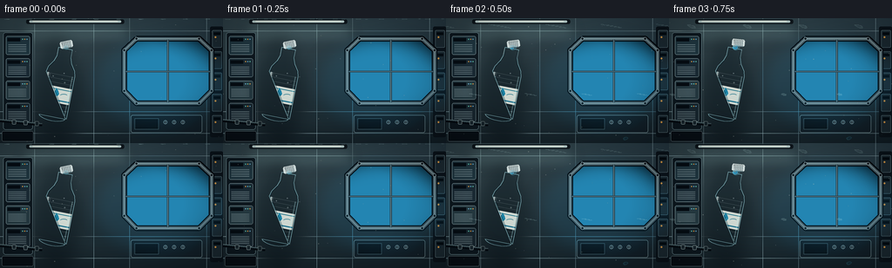
展开代码变化
--- 上一保存版本
+++ 本次保存版本
@@ -375,24 +375,24 @@
# After pinch-off, small satellites trail and orbit the main mass.
if frame >= 9:
sat_q = smoothstep(9, 19, frame)
- centers.append(dict(x=402 + 161 * sat_q, y=148 + 38 * sat_q,
- rx=7 + 11 * sat_q, ry=6 + 9 * sat_q,
+ centers.append(dict(x=398 + 132 * sat_q, y=157 + 21 * sat_q,
+ rx=6 + 8 * sat_q, ry=5 + 6 * sat_q,
angle=0.4, phase=frame * 0.91, amp=0.17))
if frame >= 12:
sat2_q = smoothstep(12, 19, frame)
- centers.append(dict(x=478 + 116 * sat2_q, y=188 + 7 * sat2_q,
- rx=5 + 7 * sat2_q, ry=4 + 6 * sat2_q,
+ centers.append(dict(x=454 + 103 * sat2_q, y=202 + 4 * sat2_q,
+ rx=4 + 5 * sat2_q, ry=4 + 4 * sat2_q,
angle=-0.2, phase=frame * 1.1, amp=0.16))
if frame >= 13:
sat3_q = smoothstep(13, 19, frame)
- centers.append(dict(x=570 + 95 * sat3_q, y=228 - 9 * sat3_q,
- rx=4 + 4 * sat3_q, ry=4 + 3 * sat3_q,
+ centers.append(dict(x=514 + 82 * sat3_q, y=227 - 3 * sat3_q,
+ rx=3 + 3 * sat3_q, ry=3 + 2 * sat3_q,
angle=0.8, phase=frame * 1.3, amp=0.18))
if frame >= 10:
for i, (x0, y0, x1, y1, r0, r1) in enumerate([
- (357, 155, 383, 172, 4.0, 6.0),
- (331, 177, 352, 194, 3.0, 4.8),
- (423, 186, 451, 207, 3.0, 5.2),
+ (357, 155, 377, 171, 3.2, 4.8),
+ (331, 177, 346, 192, 2.8, 4.0),
+ (417, 187, 441, 201, 2.8, 4.2),
]):
t = smoothstep(10, 19, frame)
centers.append(dict(x=x0 + (x1 - x0) * t, y=y0 + (y1 - y0) * t,
@@ -440,12 +440,14 @@
cyan = np.array([54, 166, 211], np.float32)
deep = np.array([7, 72, 112], np.float32)
water_col = cyan[None, None, :] * (1.0 - depth[..., None]) + deep[None, None, :] * depth[..., None]
- water_col = water_col * 0.56 + region_blur * 0.36 + region_bg * 0.08
- water_col += edge_amount[..., None] * np.array([17, 46, 45], np.float32)
+ # Liquid is mostly a lens: the backdrop remains visible through it, while
+ # the rim carries the readable cyan/white water signature.
+ water_col = water_col * 0.29 + region_blur * 0.51 + region_bg * 0.20
+ water_col += edge_amount[..., None] * np.array([31, 69, 64], np.float32)
out = base_rgb.copy()
region = out[ymin:ymax, xmin:xmax]
- region[:] = region * (1.0 - alpha[..., None] * 0.63) + water_col * (alpha[..., None] * 0.63)
+ region[:] = region * (1.0 - alpha[..., None] * 0.47) + water_col * (alpha[..., None] * 0.47)
out[ymin:ymax, xmin:xmax] = region
result = Image.fromarray(np.clip(out, 0, 255).astype(np.uint8), "RGB").convert("RGBA")
@@ -461,13 +463,13 @@
continue
hx = c["x"] - c["rx"] * 0.34
hy = c["y"] - c["ry"] * 0.42
- hw = max(2.0, c["rx"] * 0.28)
- hh = max(1.4, c["ry"] * 0.13)
- od.ellipse((hx - hw, hy - hh, hx + hw, hy + hh), fill=(238, 254, 252, 145))
+ hw = max(2.0, c["rx"] * 0.34)
+ hh = max(1.4, c["ry"] * 0.12)
+ od.ellipse((hx - hw, hy - hh, hx + hw, hy + hh), fill=(247, 255, 250, 172))
if c["rx"] > 18:
od.arc((c["x"] - c["rx"] * 0.72, c["y"] - c["ry"] * 0.82,
c["x"] + c["rx"] * 0.72, c["y"] + c["ry"] * 0.82),
- 200, 305, fill=(205, 249, 250, 95), width=3)
+ 200, 305, fill=(220, 255, 251, 125), width=3)
for i in range(15):
t = (i * 0.6180339) % 1.0
rr = 2.0 + (i % 4) * 0.8
@@ -482,12 +484,12 @@
result.alpha_composite(overlay)
rim_layer = Image.new("RGBA", (CW, CH), (0, 0, 0, 0))
- rim_layer.putdata([(180, 244, 248, int(v * 0.62)) for v in rim.reshape(-1)])
+ rim_layer.putdata([(210, 253, 251, int(v * 0.86)) for v in rim.reshape(-1)])
result.alpha_composite(rim_layer)
# Soft outer glow separates the water from the bright cupola.
glow = Image.new("RGBA", (CW, CH), (0, 0, 0, 0))
- glow.paste((42, 170, 214, 55), (0, 0), mask_img.filter(ImageFilter.GaussianBlur(9)))
+ glow.paste((31, 150, 191, 34), (0, 0), mask_img.filter(ImageFilter.GaussianBlur(8)))
result = Image.alpha_composite(glow, result)
img.paste(result, (0, 0))
可观测工具轨迹
实际执行的命令与返回图片。
命令 1exit 0
/bin/bash -c "pwd && rg --files -g 'prompt.txt' -g 'GENERATION_RULES.md' -g 'task_spec.json' -g '"'!node_modules'"'"
命令 2exit 0
/bin/bash -c 'ls -la'
命令 3exit 0
/bin/bash -c 'cat GENERATION_RULES.md'
命令 4exit 0
/bin/bash -c 'cat prompt.txt'
命令 5exit 0
/bin/bash -c 'cat task_spec.json'
命令 6exit 0
/bin/bash -c "sed -n '1,240p' artifact_io.py"
命令 7exit 1
/bin/bash -c 'python generate.py'
命令 8exit 0
/bin/bash -c 'python generate.py'
命令 9exit 0
/bin/bash -c "python - <<'PY'
import numpy as np
from PIL import Image
import generate as g
img=g.make_base(); img=g.make_window(img); mouth,up,right,theta=g.draw_bottle(img,19)
cs,main,mr=g.water_centers(19,mouth,up,right)
print('mouth',mouth,'main',main,'r',mr)
for c in cs: print(round(c['x']),round(c['y']),round(c['rx']),round(c['ry']))
a=np.asarray(img.convert('RGB')).copy()
g.render_water(img,19,mouth,up,right)
b=np.asarray(img.convert('RGB'))
print('changed',np.count_nonzero(a"'!=b),'"'max',np.abs(a.astype(int)-b.astype(int)).max())
img.convert('RGB').resize((256,144),Image.Resampling.LANCZOS).save('.tmp/debug19.png')
PY"命令 10exit 0
/bin/bash -c "python - <<'PY'
import numpy as np
from PIL import Image
im=np.asarray(Image.open('frames/19.png').convert('RGB'))
# print color at main and context; most saturated cyan pixel locations
for y in range(15,100,8):
print(y, [tuple(im[y,x]) for x in range(130,240,15)])
# compare frame19 file to direct
a=np.asarray(Image.open('frames/19.png').convert('RGB'))
b=np.asarray(Image.open('.tmp/debug19.png').convert('RGB'))
print('file/direct changed',np.count_nonzero(a"'!=b), np.abs(a.astype(int)-b.astype(int)).max())
PY'命令 11exit 0
/bin/bash -c "python - <<'PY'
from PIL import Image
im=Image.open('frames/19.png').convert('RGB')
im.crop((100,0,256,120)).resize((624,480),Image.Resampling.NEAREST).save('.tmp/crop19.png')
print(im.getextrema())
PY"命令 12exit 0
/bin/bash -c 'python generate.py'
命令 13exit 0
/bin/bash -c "python - <<'PY'
import json, numpy as np
from pathlib import Path
p=Path('.')
spec=json.loads((p/'task_spec.json').read_text())
with np.load(p/'pixels.npz') as z:
a=z['pixels']
print('pixels',a.shape,a.dtype,'minmax',int(a.min()),int(a.max()))
print('frames',len(list((p/'frames').glob('*.png'))))
print('artifacts',[(f.name,f.stat().st_size) for f in [p/'index.html',p/'pixels.npz',p/'inspection.png',p/'generate.py']])
PY"命令 14exit 0
/bin/bash -c 'python -m py_compile generate.py'
命令 15exit 0
/bin/bash -c 'git status --short'
视觉工具实际返回图片 1
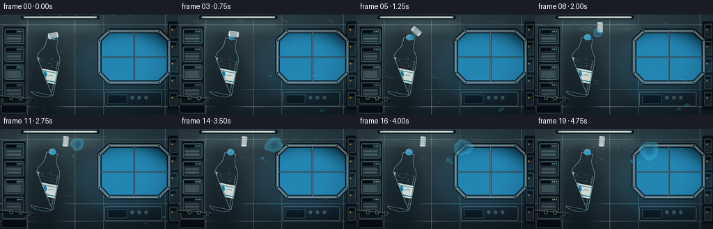
视觉工具实际返回图片 2
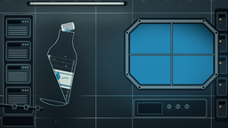
视觉工具实际返回图片 3
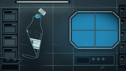
视觉工具实际返回图片 4
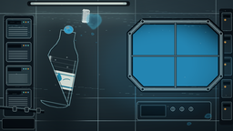
视觉工具实际返回图片 5
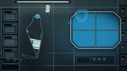
视觉工具实际返回图片 6
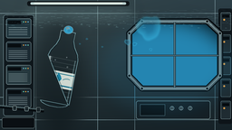
视觉工具实际返回图片 7
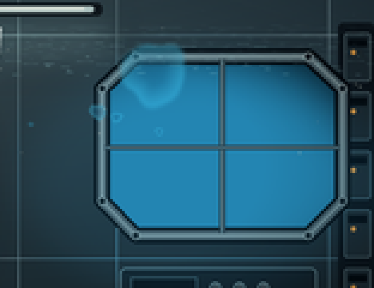
视觉工具实际返回图片 8
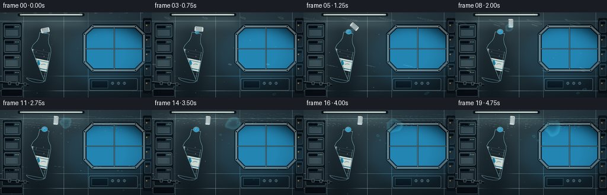
视觉工具实际返回图片 9
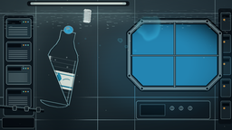
保存候选 2 份；完成命令 15 次；可验证图片返回 9 张。原始 API 响应与完整日志保留在本地。